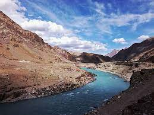
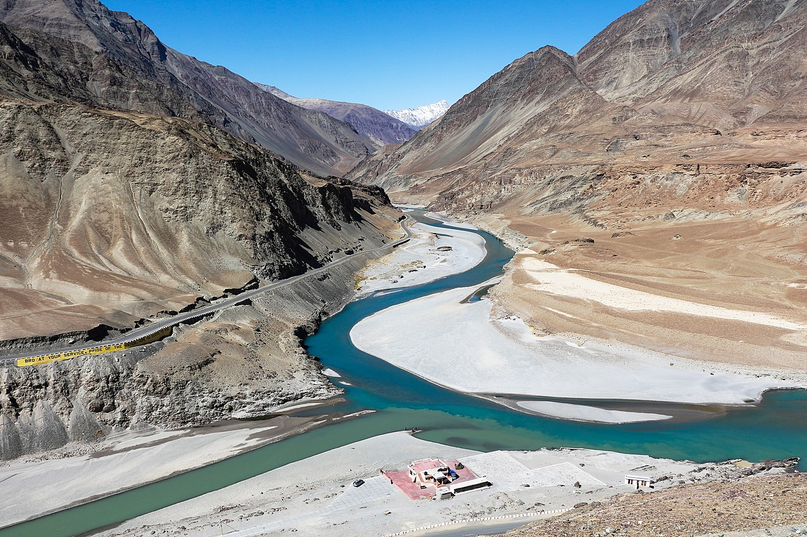

8.Indus River
The Indus (/ˈɪndəs/ IN-dəs) is a transboundary river of Asia and a trans-Himalayan river of South and Central Asia. The 3,120 km (1,940 mi)[3] river rises in mountain springs northeast of Mount Kailash in Western Tibet, flows northwest through the disputed region of Kashmir, bends sharply to the left after the Nanga Parbat massif, and flows south-by-southwest through Pakistan, before emptying into the Arabian Sea near the port city of Karachi. The river has a total drainage area of circa 1,120,000 km2 (430,000 sq mi).Its estimated annual flow is around 243 km3 (58 cu mi), making it one of the 50 largest rivers in the world in terms of average annual flow. Its left-bank tributary in Ladakh is the Zanskar River, and its left-bank tributary in the plains is the Panjnad River which is formed by the successive confluences of the five Punjab rivers, namely the Chenab, Jhelum, Ravi, Beas, and Sutlej rivers
The northern part of the Indus Valley, with its tributaries, forms the Punjab region of South Asia, while the lower course of the river ends in a large delta in the southern Sindh province of Pakistan. The river has historically been important to many cultures of the region. The 3rd millennium BC saw the rise of Indus Valley civilisation, a major urban civilization of the Bronze Age. During the 2nd millennium BC, the Punjab region was mentioned in the Rigveda hymns as Sapta Sindhu and in the Avesta religious texts as Saptha Hindu (both terms meaning "seven rivers"). Early historical kingdoms that arose in the Indus Valley include Gandhāra, and the Ror dynasty of Sauvīra. The Indus River came into the knowledge of the Western world early in the classical period, when King Darius of Persia sent his Greek subject Scylax of Caryanda to explore the river, c. 515 BC.

The Indus River provides key water resources for Pakistan's economy – especially the breadbasket of Punjab province, which accounts for most of the nation's agricultural production, and Sindh. The word Punjab means "land of five rivers" and the five rivers are Jhelum, Chenab, Ravi, Beas and Sutlej, all of which finally flow into the Indus. The Indus also supports many heavy industries and provides the main supply of potable water in Pakistan. The total length of the river varies in different sources. The length used in this article is 3,180 km (1,980 mi), taken from the Himalayan Climate and Water Atlas.

The Indus is one of the few rivers in the world to exhibit a tidal bore. The Indus system is largely
fed by the snow and glaciers of the Himalayas,
Karakoram and the Hindu Kush ranges. The flow of the river is also determined by the seasons – it
diminishes greatly in the winter,
while flooding its banks in the monsoon months from July to September.
There is also evidence of a steady shift in the course of the river since prehistoric times – it
deviated westwards from flowing into the Rann of Kutch
and adjoining Banni grasslands after the 1816 earthquake.As of 2011, Indus water flows in to the
Rann of Kutch during its floods breaching flood banks.